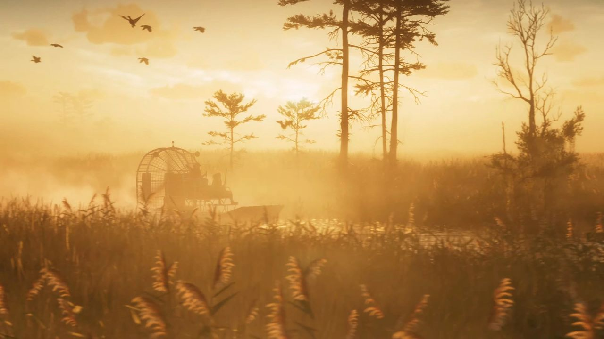
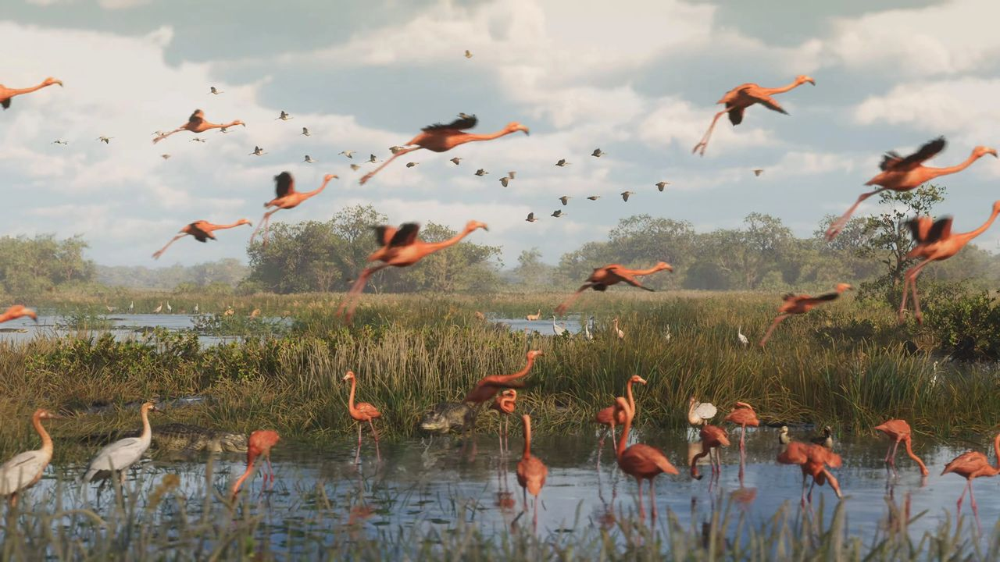
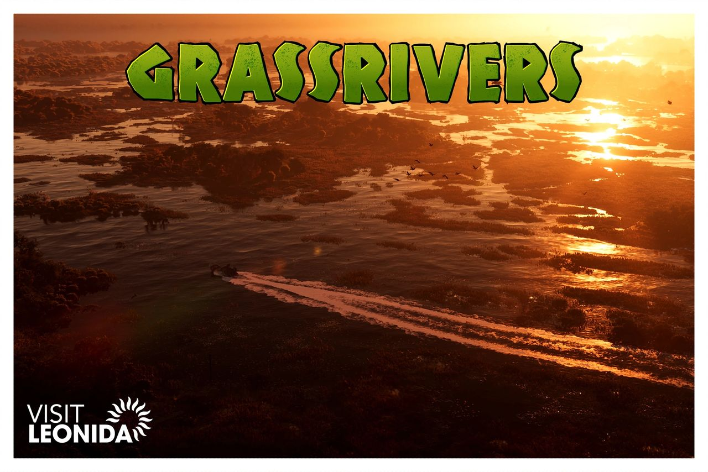
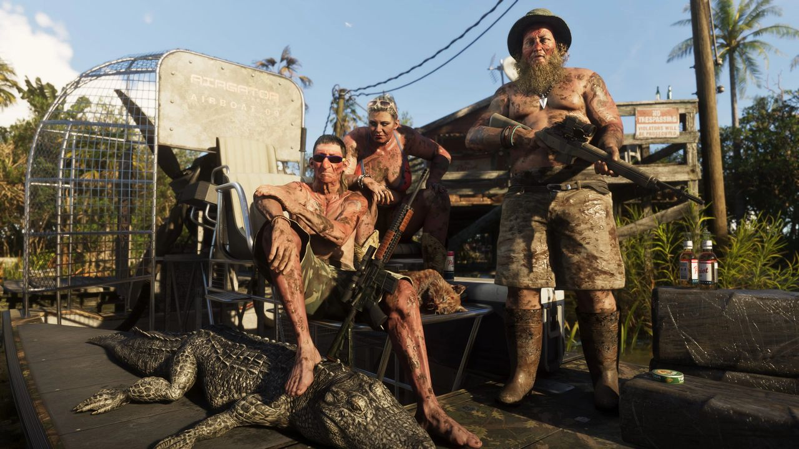
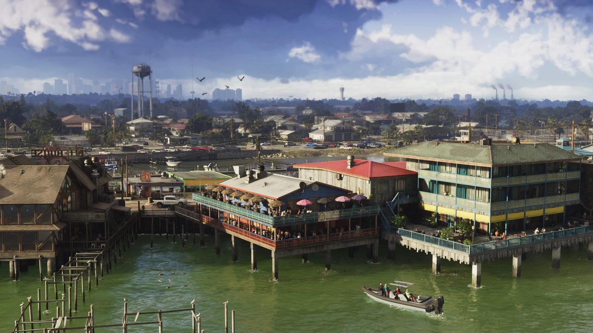
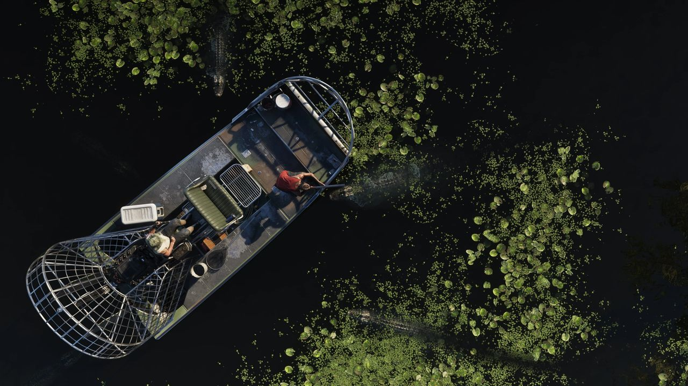
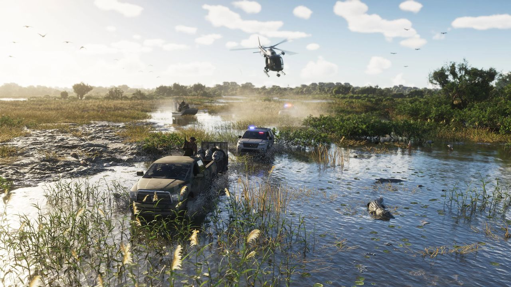
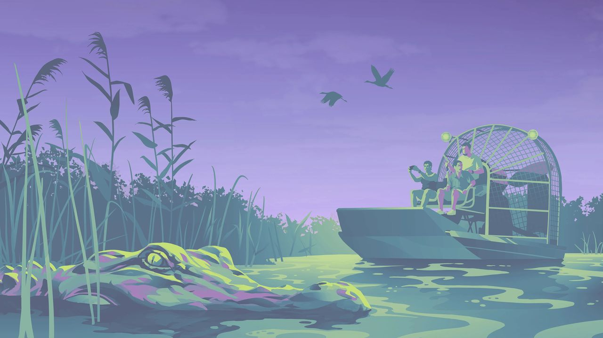

Fiabilité Le nom Grassrivers est d'abord apparu dans les fuites de septembre 2022 (panneau pédagogique), puis a été confirmé par la bande-annonce 1 et le site officiel.
Les Grassrivers sont une région naturelle de prairies inondées, dans le sud de l'État de Leonida. Elles traversent les comtés de Vice-Dale et de Mariana.
Galerie








© Rockstar Games / Take-Two Interactive — images officielles de GTA VI (bandes-annonces, captures, site officiel), via GTA Wiki.
Comment on les connaît
- GTA IV : une publicité de voyage pour Vice City mentionne déjà, de façon indirecte, ce marais, de même qu'un touriste qui aurait fait passer un crocodile de la bordure des marais de Vice City jusqu'à Liberty City.
- Fuites de septembre 2022 (non officiel) : le nom apparaît sur un panneau pédagogique intitulé « Energy in the Grassrivers » qui explique l'écosystème.
- Bande-annonce 1 : deux plans consécutifs, un aéroglisseur qui traverse la région (0:19), puis un groupe de flamants roses avec plusieurs alligators (0:20).
À voir aussi
La ville de Watson Bay, la faune de Leonida et, à proximité, le Boone Speedway (région de Hamlet).
Inspiration réelle
Les Grassrivers s'inspirent des Everglades de Floride. Leur nom fait probablement référence au livre de Marjory Stoneman Douglas, The Everglades: River of Grass (1947).